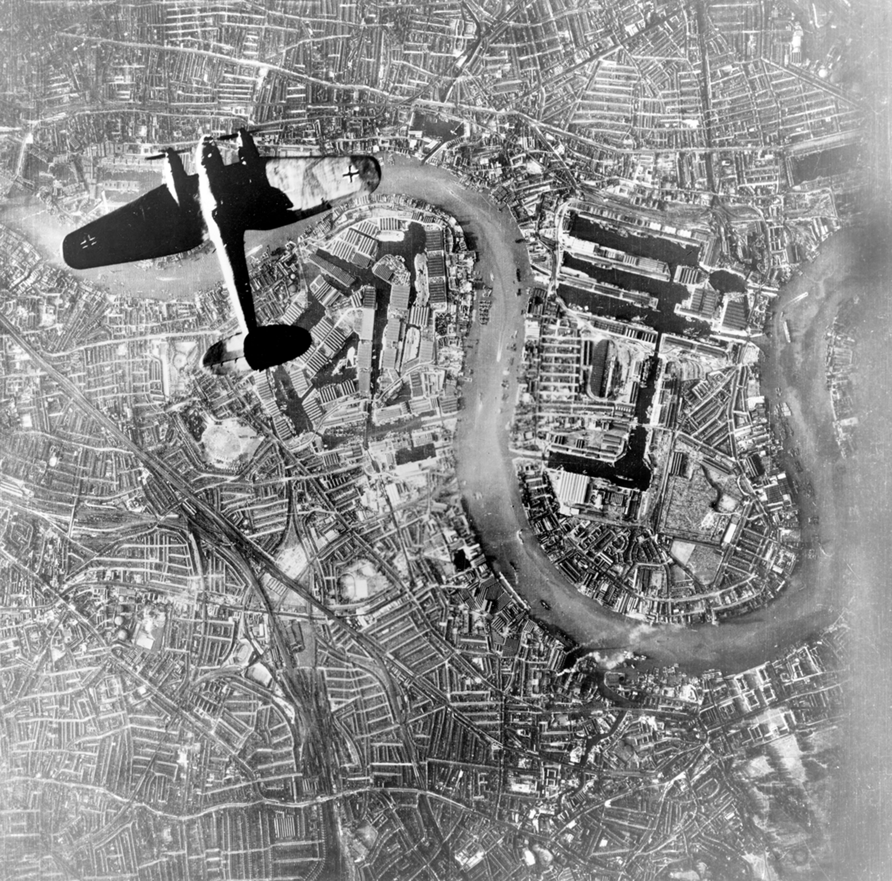

Amazing London Monuments
London is home to many iconic monuments, having some of the most famous statues and towers in the whole world. These monuments have been appraised as fantastic works of architecture and remembrance. Starting with our first and most popular, the Palace of Westminster’s clock tower, but famously known as Big Ben. The tower was first designed by talented architect Charles Berry, after the original Palace of Westminster was burnt down nearly 200 years ago. The time it took to be fully built was around 16 years. It now stands in the center of London, being the third tallest clock tower in the United Kingdom.
Next, we have the Tower Bridge, truly an absolutely beautiful eye-catcher.
Standing atop the River Thames, it is one of five bridges in London, and unwittingly the
prettiest. When it comes to the history behind this fantastic work, there was a split in
population on both sides of the Thames. One side has around 60% of the population living
there, and the other 40%. Edward, the Prince of Wales, and his wife Alexandra, opened the
bridge to all in 1894, connecting all of the citizens of the United Kingdom to be one again.
When you see it on your trip, make sure to get a fantastic picture, this is some of the best
Neo-Gothic architecture in the world!
Moving to my personal favorite, we have the Tower of London. This is a
history-rich castle that once served as a royal palace, prison, living quarters, and even
treasury. This is an absolute must-go on your trip offering so many awesome experiences.
There is a dazzling tour of the former Queen of England’s crown jewels. You can see it all,
the tiaras, the gold plated crowns, amd even decorated plates that the royalty once ate off
of. You can get a tour from the Yeoman’s, who are the historical figures that work at the
castle. They will tell hilarious tales of working at the castle and their favorite ravens.
This moves us to our next topic, the ravens! Not the football team, but the famous birds
that live around the Tower. These birds are very docile and never leave the castle. Lastly,
they have a full armory of knight armor, containing helmets, swords, horse armor, and real
life replicas.
Lastly, we can’t talk about London Monuments without going over Buckingham Palace. This is a stunning building, displaying what modern day royalty in the English Monarch maintains. The building highlights decadent throne rooms, ballrooms, gardens, and here you can see the guards with the fluffy black hat. You can also go on many tours, one being for the treasures of the palace, and the lovely gardens.

Learn About War on London
 Visit PageMap of London
You can come check here to see where the activity is located in London. If there is anything very strictly located in London there will be a pin on the map to it's location. Otherwise it will be empty.
- Big Ben
- North off of the River Thames, in Westminster
- Tower Bridge
- Very Close to Big Ben, slightly east of it, right above the Thames
- Tower of London
- Deep in the heart of main London
- Buckingham Palace
- South of main London